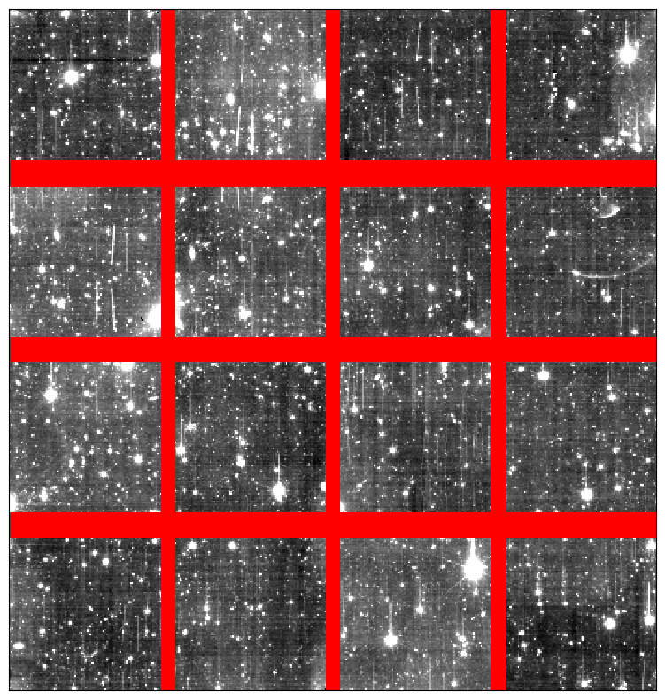

def test_get_obs_id_from_filename():
fns = [
"EUC_NIR_W-CAL-IMAGE_J-2683-1_20240930T172941.702020Z.fits",
"EUC_VIS_SWL-DET-002683-01-2-0000000__20241017T024939.257987Z.fits",
"EUC_SIR_W-SCIFRM_BKGSUB_2683_11838_1_RGS180_4_2024-10-31T17:46:48.124158Z.fits",
"this/that/a-1234-b/EUC_NIR_W-CAL-IMAGE_J-2683-1_20240930T172941.702020Z.fits",
"EUC_NIR_J-2683.fits",
"EUC_VIS-2683.fits",
]
for fn in fns:
obs_id = get_obs_id_from_filename(fn)
assert obs_id == 2683
test_get_obs_id_from_filename()utilities
Utilities for processing Euclid images.
get_nisp_images_for_observation
def get_nisp_images_for_observation(
obs_id, # the main observation id
n_prior:int=0, # number of previous observations to include
n_after:int=0, # number of subsequent observations to include
path:NoneType=None, # base path to search
include_sir:bool=False, # include SIR files
fill_missing:bool=True, # fill missing images with None
):
Find NISP images for the specified obs_id and optionally n_prior and n_after observations.
get_primary_header
def get_primary_header(
fns, # an iterable of image filenames
):
Create a primary header from the provided list of files.
The returned header contains all the entries from the files’ primary headers that have consistent values across all the files.
fits_append
def fits_append(
fn, data, ext, primary_header, exthdr:NoneType=None
):
Call self as a function.
get_rms
def get_rms(
fn, extname, instrument:str='NIR'
):
Call self as a function.
get_vis_star_mask
def get_vis_star_mask(
fn, extname
):
Call self as a function.
get_nir_saturation_only_mask
def get_nir_saturation_only_mask(
fn, extname
):
Call self as a function.
get_invalid_mask_without_persistence
def get_invalid_mask_without_persistence(
fn, extname
):
Call self as a function.
get_invalid_mask
def get_invalid_mask(
fn, extname
):
Call self as a function.
get_persistence_mask
def get_persistence_mask(
fn, extname
):
Call self as a function.
get_dq_mask
def get_dq_mask(
fn, extname:str='SCI', maskbits:list=[0], instrument:str='NIR'
):
Call self as a function.
dq_to_mask
def dq_to_mask(
dq, maskbits:list=[0]
):
Call self as a function.
remove_if_necessary
def remove_if_necessary(
path, fnglob
):
Call self as a function.
default_data_path
def default_data_path(
subfolders:VAR_POSITIONAL
):
Discover the default path to Euclid data, and append subfolder.
This first looks for an environment variable EUCLID_DATA. If that is not found, it looks for a folder (potentially a link) ~/euclid_data. If that is not present, it raises an error. Finally, any provided subfolders are appended to the path.
euclid_credentials
def euclid_credentials(
):
Get Euclid user and password from ~/.euclid_credentials, if it exists.
get_vis_stack
def get_vis_stack(
obs_id, path
):
Call self as a function.
get_vis_dither
def get_vis_dither(
obs_id, dither, path
):
Call self as a function.
get_vis_tile
def get_vis_tile(
tile_index, path
):
Call self as a function.
get_nisp_stack
def get_nisp_stack(
obs_id, filter, path
):
Call self as a function.
get_nisp_dither
def get_nisp_dither(
obs_id, dither, filter, path
):
Call self as a function.
get_nisp_tile
def get_nisp_tile(
tile_index, filter, path
):
Call self as a function.
find_single_file
def find_single_file(
fn, path
):
Call self as a function.
TooManyFilesFoundError
def TooManyFilesFoundError(
args:VAR_POSITIONAL, kwargs:VAR_KEYWORD
):
Common base class for all non-exit exceptions.
Get information from standard Euclid filename
get_filter_from_filename
def get_filter_from_filename(
fn
):
Call self as a function.
get_dither_id_from_filename
def get_dither_id_from_filename(
fn
):
Call self as a function.
get_obs_id_from_filename
def get_obs_id_from_filename(
fn
):
Call self as a function.
get_tile_index_from_filename
def get_tile_index_from_filename(
fn
):
Call self as a function.
Math
round_up_box_size
def round_up_box_size(
x, y
):
Return an integer z closest to y that approximate integer z = x.*
Plotting
assemble_fpa_mosaic
def assemble_fpa_mosaic(
hdus, # The HDUs from a FITS file, where each extension contains the data of one detector.
instrument:str='NISP', # Instrument name, either "NISP" or "VIS". Default is "NISP".
binsize:NoneType=None, # If provided, bin the final mosaic image by this factor using median combining.
unify_zpt:NoneType=None, # If provided, scale all detector images to a common magnitude zero point.
unify_pix_scl:NoneType=None, # If provided, scale all pixel values to a common pixel scale. Use caution with this
option, as it can significantly slow down the processing.
): # A 2D numpy array representing the assembled focal plane mosaic image. Gaps between
detectors are filled with NaN values.
Assemble the focal plane mosaic image from a multi-extension FITS file.
Tests
def test_get_dither_id_from_filename():
fns = [
"EUC_NIR_W-CAL-IMAGE_J-2683-1_20240930T172941.702020Z.fits",
"EUC_SIR_W-SCIFRM_BKGSUB_2683_11838_1_RGS180_4_2024-10-31T17:46:48.124158Z.fits",
"this/that/a-1234-b/EUC_NIR_W-CAL-IMAGE_J-2683-1_20240930T172941.702020Z.fits",
]
for fn in fns:
dither_id = get_dither_id_from_filename(fn)
assert dither_id == "1"
fns = [
"EUC_VIS_SWL-DET-002683-01-2-0000000__20241017T024939.257987Z.fits",
"this/that/a-1234-b/EUC_VIS_SWL-DET-002683-01-2-0000000__20241017T024939.257987Z.fits",
]
for fn in fns:
dither_id = get_dither_id_from_filename(fn)
assert dither_id == "1-2"
fns = [
"EUC_MER_BGSUB-MOSAIC-NIR-H_TILE102018211-42F1AD_20241018T142558.469987Z_00.00.fits",
"this/that/TILE1234-b/EUC_MER_BGSUB-MOSAIC-NIR-H_TILE102018211-42F1AD_20241018T142558.469987Z_00.00.fits",
"EUC_NIR_J-2683.fits",
"EUC_VIS-2683.fits",
]
for fn in fns:
dither_id = get_dither_id_from_filename(fn)
assert dither_id is None
test_get_dither_id_from_filename()def test_get_filter_from_filename():
fns = [
"EUC_NIR_W-CAL-IMAGE_J-2683-1_20240930T172941.702020Z.fits",
"EUC_VIS_SWL-DET-002683-01-2-0000000__20241017T024939.257987Z.fits",
"EUC_SIR_W-SCIFRM_BKGSUB_2683_11838_1_RGS180_4_2024-10-31T17:46:48.124158Z.fits",
"this/that/a-1234-b/EUC_NIR_W-CAL-IMAGE_J-2683-1_20240930T172941.702020Z.fits",
"EUC_MER_BGSUB-MOSAIC-NIR-H_TILE102018211-42F1AD_20241018T142558.469987Z_00.00.fits",
"this/that/TILE1234-b/EUC_MER_BGSUB-MOSAIC-NIR-H_TILE102018211-42F1AD_20241018T142558.469987Z_00.00.fits",
"EUC_NIR_J-2683.fits",
"EUC_VIS-2683.fits",
]
filters = [get_filter_from_filename(fn) for fn in fns]
assert filters == ["J", "VIS", "SIR", "J", "H", "H", "J", "VIS"]
test_get_filter_from_filename()def test_get_tile_index_from_filename():
fns = [
"EUC_MER_BGSUB-MOSAIC-NIR-H_TILE102018211-42F1AD_20241018T142558.469987Z_00.00.fits",
"this/that/TILE1234-b/EUC_MER_BGSUB-MOSAIC-NIR-H_TILE102018211-42F1AD_20241018T142558.469987Z_00.00.fits",
]
for fn in fns:
assert get_tile_index_from_filename(fn) == 102018211
test_get_tile_index_from_filename()Examples
assemble a focal plane mosaic image from a Euclid datacube
# NISP example
dither_path = (
default_data_path("Q1_R1", "NIR", "2683")
/ "EUC_NIR_W-CAL-IMAGE_H-2683-0_20240930T184607.344746Z.fits"
)
# VIS example
# dither_path = (
# default_data_path("Q1_R1", "VIS_QUAD", "2683")
# / "EUC_VIS_SWL-DET-002683-00-1-0000000__20241017T024940.664995Z.fits"
# )
with fits.open(dither_path) as hdul:
fpa = assemble_fpa_mosaic(hdul, instrument="NISP", binsize=20)
norm = ImageNormalize(fpa, interval=ZScaleInterval())
cmap = plt.get_cmap("gray")
cmap.set_bad("red")
plt.figure(figsize=(10, 10))
plt.imshow(fpa, cmap=cmap, norm=norm)
plt.xticks([])
plt.yticks([])